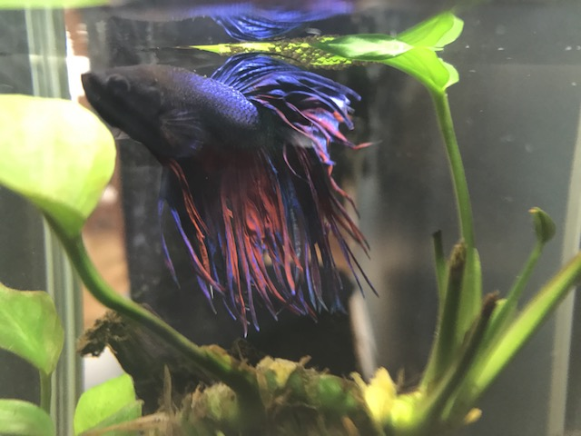

Hello! Welcome to my website. My name is Gill.
I was once told that, as a fish, my memory only last up to about 3 seconds... but while that theory has been debunked, my memory isn't all that good. So I figured "why not jot my notes down?" Since pen and paper are not very conducive to my environment, I invested in a tiny bluetooth (or as we call it, deep-bluetooth)headset and am dictating this to my buddy's computer.
To be perfectly honest, my typical day is very relaxing. I typically wake up and have a few protein pellets, swim some laps, then take a nap. It's a good life. Sometimes I get a treat of bloodworms or mysis.